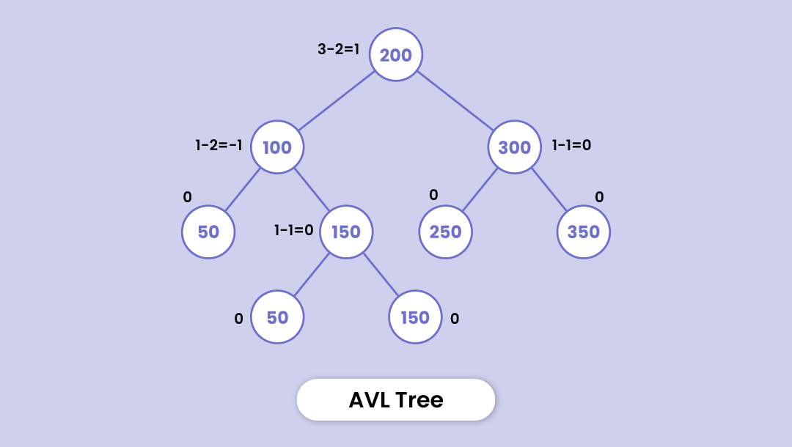

An AVL Tree is a self-balancing binary search tree where the difference in heights between the left and right subtrees of any node is at most one. This balance property ensures that the tree remains balanced, providing efficient search, insertion, and deletion operations.
